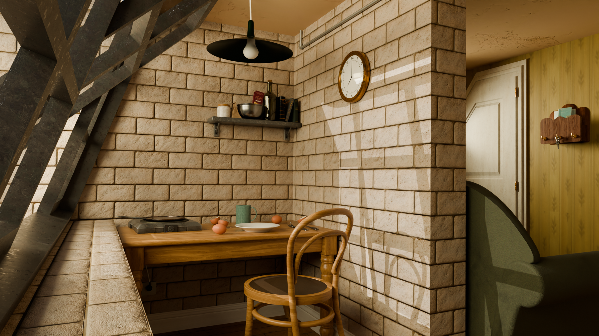
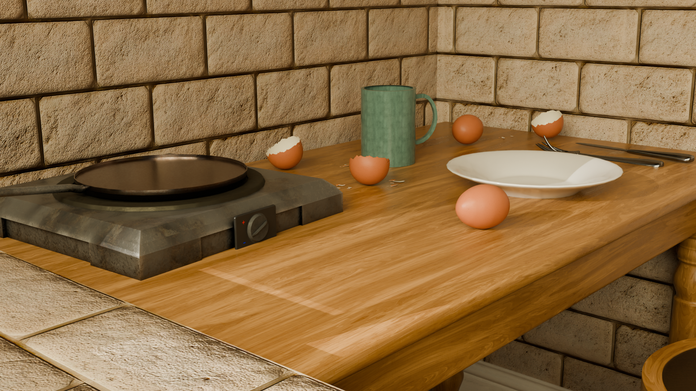
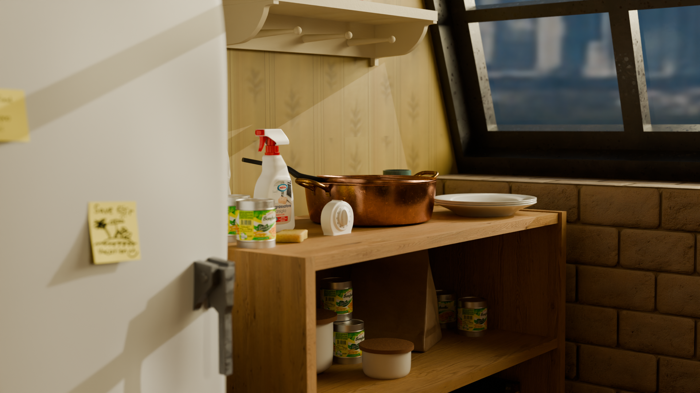
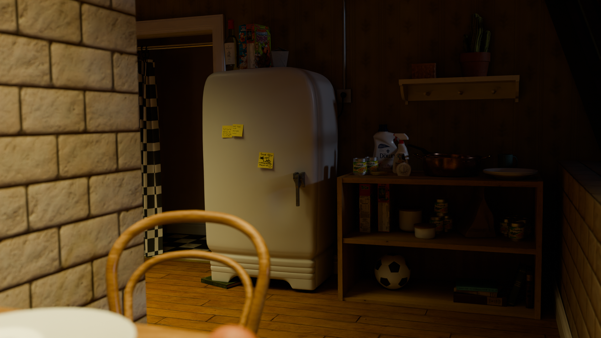
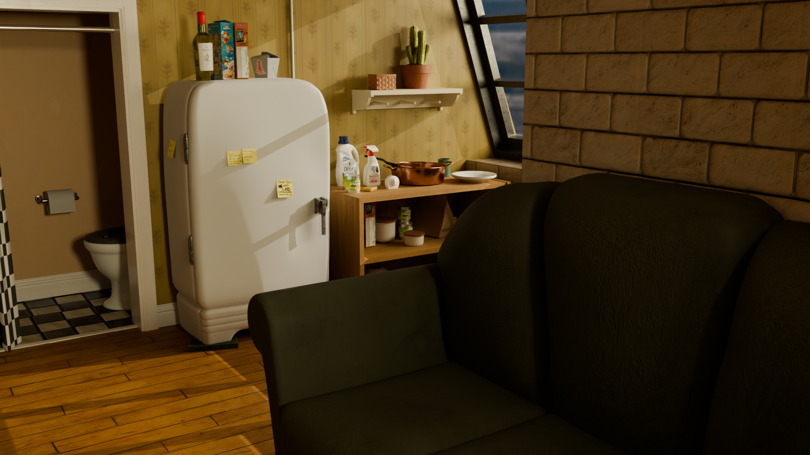
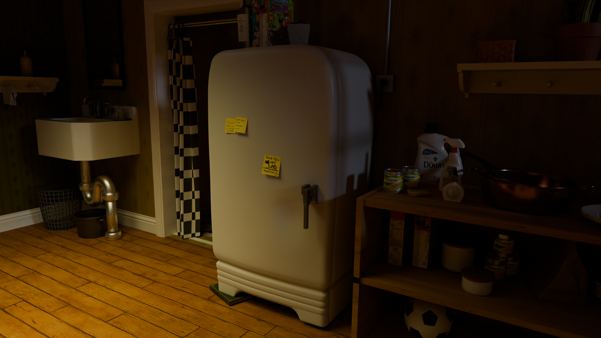
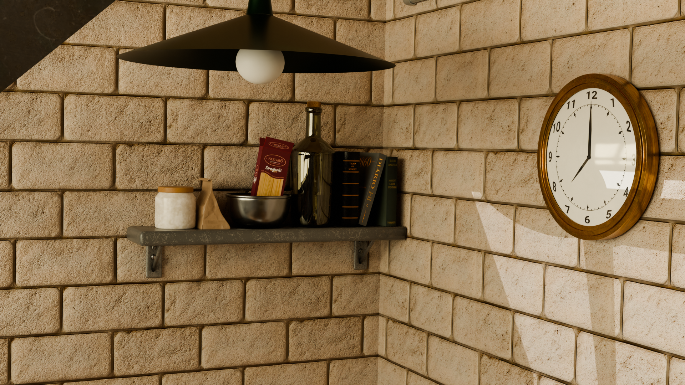
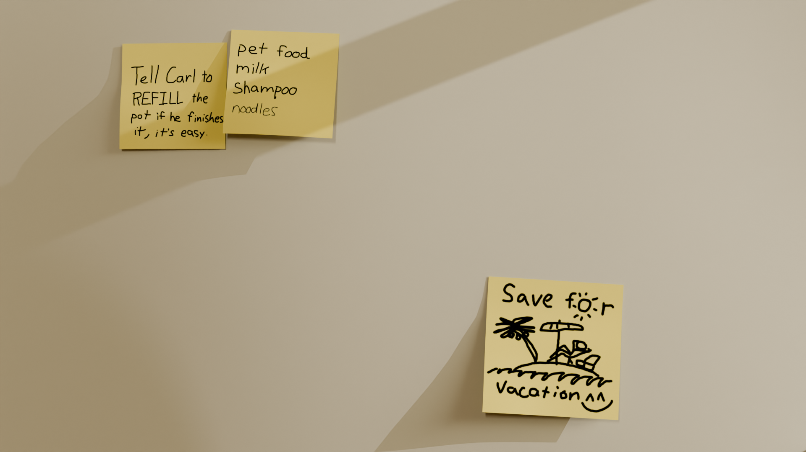
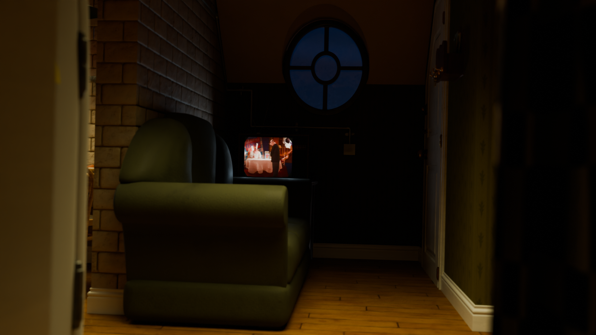
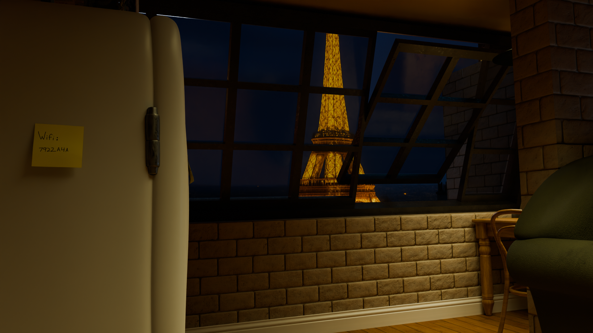

La dea bendata
"La dea bendata" è un cortometraggio realizzato nell'ambito universitario. Il progetto mi ha permesso di lavorare sia durante la fase di produzione sia nella successiva fase di post-produzione.
Durante le riprese ho ricoperto il ruolo di segretaria di edizione, occupandomi della continuità tra le diverse scene, della documentazione del girato e del supporto al reparto regia. Successivamente ho seguito la post-produzione e il montaggio video, curando il materiale fino alla finalizzazione del cortometraggio.
Ruolo Segretaria di edizione e video editor
Selezionato per la rassegna “Unito vs Polito” al Sottodiciotto Filmfestival (2ª edizione).
Il mestiere di vivere
"Il mestiere di vivere" è un progetto realizzato in Realtà Virtuale a 180°, attraverso l'utilizzo di camere Canon e ottiche dedicate alla ripresa stereoscopica/immersiva. L'obiettivo è quello di sperimentare un modo differente di costruire e fruire un racconto audiovisivo, pensato non più esclusivamente per uno schermo tradizionale ma per essere vissuto attraverso un visore.
Nel progetto ho seguito diverse fasi della produzione: dalla gestione della continuità sul set e organizzazione del girato, alla gestione e messa in sicurezza dei file ad alta risoluzione. In post-produzione mi sono occupata del montaggio e della finalizzazione del contenuto, adattandolo alle esigenze della fruizione in VR.
Ruolo Segretaria di edizione, data manager e video editor
Flight
"Flight" è un progetto realizzato nell'ambito del corso di Fotografia e Cinema Digitale, nato con l'obiettivo di sperimentare il linguaggio cinematografico attraverso la fotografia e la costruzione delle inquadrature.
Nel progetto ho lavorato come camera operator, occupandomi della gestione pratica del comparto macchina e della realizzazione delle diverse inquadrature. Il lavoro mi ha permesso di approfondire il rapporto tra macchina da presa, composizione, movimento e luce, collaborando direttamente con la regia e la direzione della fotografia per la costruzione di un linguaggio visivo coerente con il concept del cortometraggio.
Ruolo Camera operator
Nel cuore di Acquaviva
"Nel cuore di Acquaviva" è un progetto individuale nato dal desiderio di raccontare, attraverso il linguaggio audiovisivo, la memoria e il passato del mio paese.
Il progetto si basa sulla ricerca di un linguaggio visivo che possa raccontare la storia di un luogo attraverso l'uso del colore e della luce. Ho scelto di utilizzare il colore come elemento narrativo, trasformandolo in uno strumento per evocare e reinterpretare la storia dei luoghi. La realizzazione è avvenuta interamente in autonomia, dalla definizione del concept alle riprese con una Insta360, fino al montaggio e alla post-produzione.
La scelta del formato 360° ha permesso di trasformare il semplice racconto di un luogo in un'esperienza immersiva, pensata per essere esplorata attraverso un visore.
Ruolo Ideatrice, regista e video editor
Ludwig Van BeeTown
"Ludwig Van BeeTown" è un progetto universitario, ispirato allo scenario futuristico delle Città invisibili di Italo Calvino.
Il progetto nasce dalla volontà di immaginare la città del futuro attraverso un'esperienza multimediale e interattiva. Insieme al gruppo di lavoro ho contribuito alla definizione del concept e alla realizzazione dell'installazione, sviluppata attraverso Isadora.
Mi sono occupata inoltre della realizzazione delle animazioni 2D e del montaggio dei contenuti video integrati nell'esperienza. Ho infine curato la realizzazione del trailer del progetto, pensato per presentarne il concept e il risultato finale al pubblico.
Ruolo Co-ideatrice, animatrice 2D e video editor
Ambiente 3D: casa di Linguini
Questo progetto ha permesso di sperimentare e approfondire le diverse tecniche di modellazione 3D attraverso Blender, ricostruendo un ambiente tratto da un film già esistente.
Insieme al mio team abbiamo realizzato la modellazione degli elementi della scena, occupandoci successivamente del posizionamento delle camere virtuali e della costruzione dell'illuminazione.
Il progetto mi ha permesso di confrontarmi con una pipeline 3D completa, comprendendo come modellazione, composizione della scena, camera e luce contribuiscano insieme alla costruzione di un'immagine credibile.










Pubblicità CRAI
In questo progetto di gruppo l'obiettivo è stato quello di ricreare da zero una pubblicità già esistente.
Il lavoro ha coinvolto diverse fasi della produzione: dalla modellazione degli ambienti e degli elementi presenti nello spot, alla costruzione delle scene e all'animazione dei soggetti attraverso la tecnica dei keyframe.
Il progetto ha richiesto un forte coordinamento tra i componenti del gruppo, soprattutto per mantenere coerenza tra le diverse scene e rispettare con precisione il timing dello spot originale.
Ruolo 3D animator